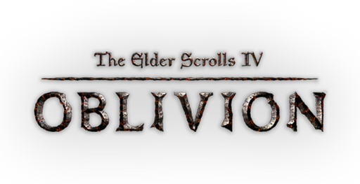

This website was created by Fazzi. All other content is either a trademark or a registered trademark of its respective owners. All rights are reserved. This website is not affiliated with or endorsed by the developer or publisher of the depicted game.